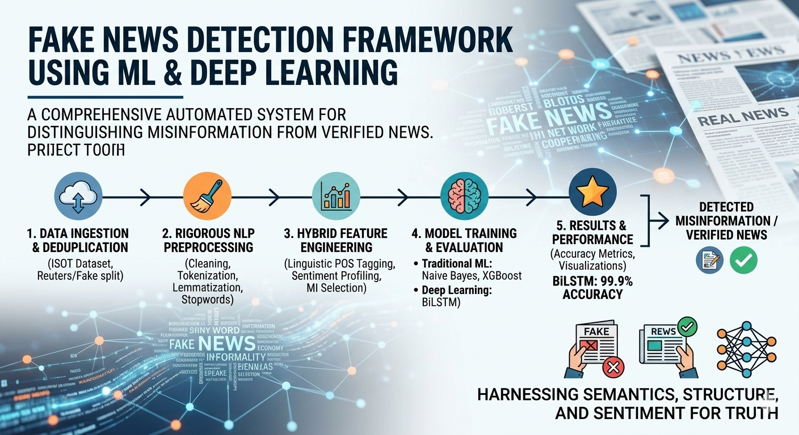
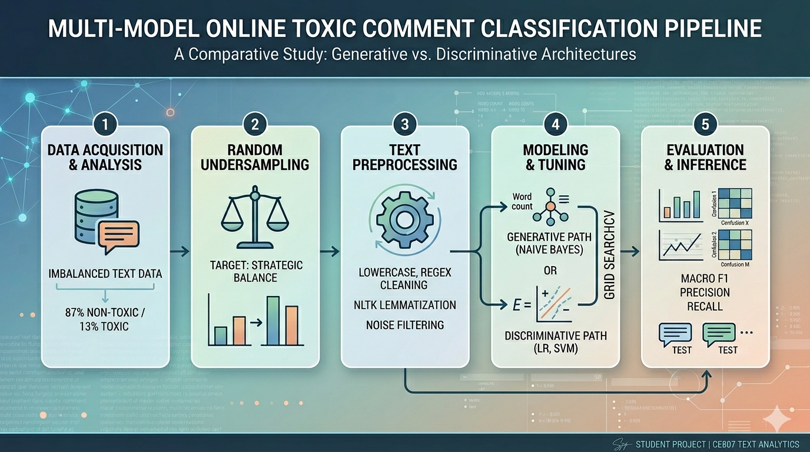
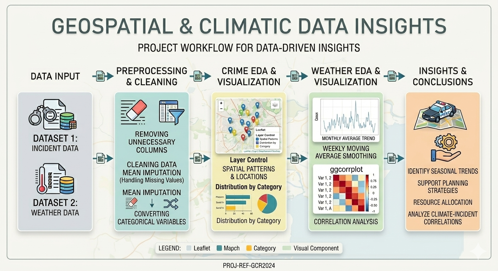
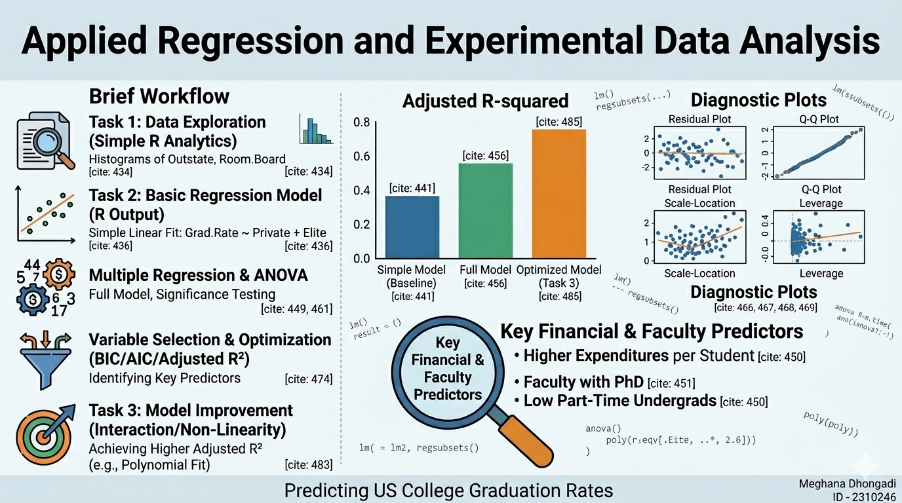
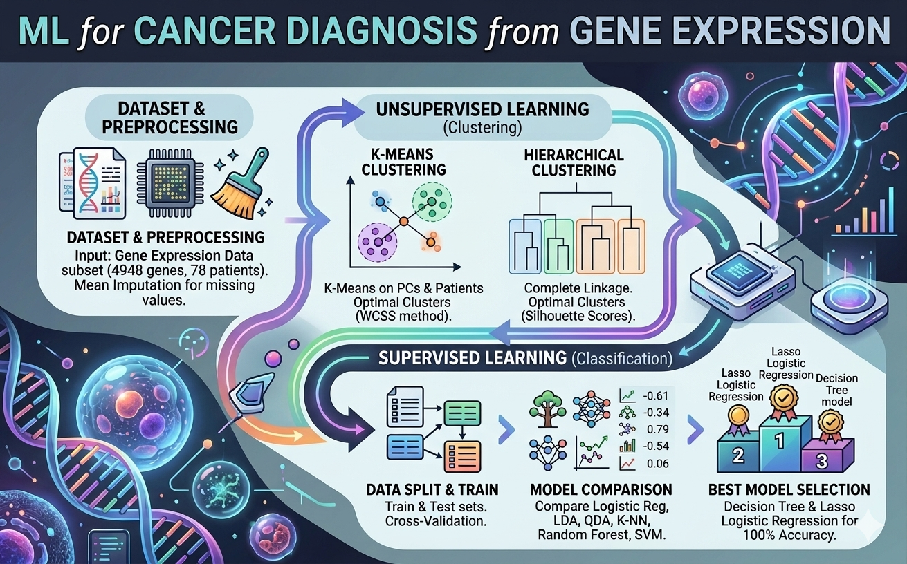

September 2024
Sentiment Analysis(MSc Dissertation)
Engineered an automated Fake News Detection framework that achieved 99.9% classification accuracy and a 100% recall rate on a dataset of ~45,000 articles by building a Bidirectional LSTM (BiLSTM) deep learning model in TensorFlow to capture dual-direction semantic dependencies.
Optimized model training efficiency and predictive power by designing a robust NLP preprocessing pipeline (deduplication, tokenization, lemmatization) and leveraging Mutual Information (MI) scoring to extract and rank the top 15 linguistic, structural, and POS features.
Benchmarked 5 ML/DL architectures (including Naive Bayes, SVM, Random Forest, and XGBoost) and integrated Sentiment Analysis (polarity/subjectivity profiling) to evaluate how emotional intensity scales predictive performance alongside traditional word vectors.

April 2024
Multi-Model Toxic Comment Classification

Engineered a Multi-Model NLP Pipeline to classify online text toxicity, overcoming a severe 87% class imbalance by implementing a strategic random undersampling workflow that optimized minority class distribution to 18.5%.
Developed and Fine-Tuned Generative and Discriminative Models, including Multinomial Naive Bayes, Logistic Regression, and Linear SVM architectures, utilizing 5-fold Stratified K-Fold cross-validation and hyperparameter grid searches.
Boosted Toxicity Classification Performance by implementing balanced class-weight constraints and an intensive text preprocessing pipeline (regex normalization, ASCII filtering, and NLTK lemmatization), maximizing True Positive detection rates.
April 2024
Colchester Data Analysis: Spatial-Temporal Crime Patterns & Climate Dynamics (2023)

Exploratory Data Analysis & Feature Engineering: Engineered a robust data preprocessing pipeline in R for 6,800+ spatial crime records and daily climate datasets; performed regex string cleansing, categorical factor casting, and automated loop-based mean imputation to handle missing data and guarantee dataset completeness.
Advanced Visualizations & Predictive Insights: Developed interactive Leaflet geospatial maps, multivariate correlation matrices (ggcorrplot), and bimodal density profiles to uncover highly localized crime clusters around commercial zones and establish key environmental trends for predictive policing frameworks.
Time-Series Modeling & Trend Smoothing: Applied advanced time-series smoothing techniques—including a 7-day moving average function using the forecast and xts packages—to filter out short-term statistical noise and successfully isolate macro-seasonal climate and temporal activity cycles.
November 2023
Predictive Modeling of US College Graduation Rates

Engineered End-to-End Predictive Frameworks: Built a robust multiple linear regression model in R to forecast university graduation rates using a dataset of 700 institutions, implementing automated variable selection via BIC optimization to reduce feature complexity from 16 variables down to the 8 most critical predictors.
Optimized Model Accuracy & Addressed Non-Linearity: Diagnosed model limitations using advanced residual plots and successfully mitigated systematic curvature by incorporating 2nd-degree polynomial transformations and interaction terms, boosting the final Adjusted R Squared to 46.08%.
Extracted Actionable Data Insights: Conducted comprehensive Exploratory Data Analysis (EDA) and ANOVA model evaluations to isolate critical institutional success drivers, identifying key correlations between graduation rates and factors like instructional expenditures, student demographics, and faculty qualifications.
March 2024
Gene Expression Cancer Classification & Clustering

Engineered End-to-End Diagnostic Pipeline in RStudio for a high-dimensional genetic cancer dataset (78 X 4948), implementing a mean-imputation data-cleaning workflow to process missing features and optimize dataset readiness.
Mitigated Multicollinearity and the Curse of Dimensionality by leveraging Principal Component Analysis (PCA) to condense 2,000 highly correlated gene features into 4 uncorrelated components, capturing maximum dataset variance while streamlining model computation.
Developed and Evaluated 6+ Machine Learning Models, including Lasso-regularized Logistic Regression and Decision Trees, achieving a 100% classification accuracy rate on validation data to accurately differentiate between invasive and noninvasive cancer types.